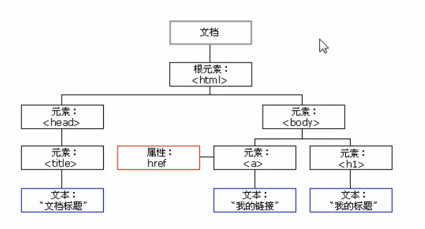
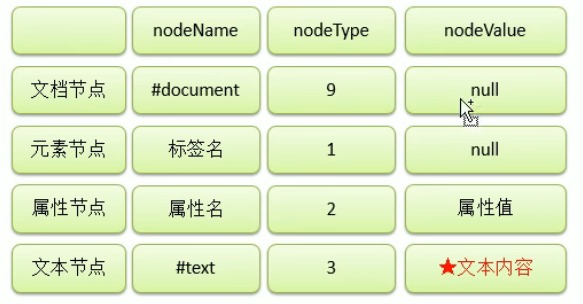

JavaScript（简称“JS”） 是一种具有函数优先的轻量级，解释型或即时编译型的编程语言。虽然它是作为开发Web页面的脚本语言而出名，但是它也被用到了很多非浏览器环境中，JavaScript 基于原型编程、多范式的动态脚本语言，并且支持面向对象、命令式、声明式、函数式编程范式。
解析器在调用函数每次都会向函数内部传递进一个隐含的参数，这个隐含的参数就是this;
this指向的是一个对象，这个对象我们称为函数执行的上下文对象，
根据函数的调用方式的不同，this会指向不同的对象
1.以函数的形式调用时，this永远都是window
2.以方法的形式调用时，this就是调用方法的那个对象
3.当以构造函数的形式调用时，this就是新创建的那个对象
构造函数就是一个普通的函数，创建方式和普通函数没有区别，不同的是构造函数习惯上首字母大写
构造函数和普通函数的区别就是调用方式的不同
普通函数是直接调用，而构造函数需要使用new关键字来调用
构造函数的执行流程:
构造函数可以专门用来创建一类对象
使用同一个构造函数创建的对象，我们称为一类对象，也将一个构造函数称为一个类。
我们将通过一个构造函数创建的对象，称为是该类的实例
xxxxxxxxxx101function Person(name, age, gender){2 this.name = name;3 this.age = age;4 this.gender = gender;5 // 这样会浪费资源，重复创造方法对象,使用原型解决6 this.sayName = function(){7 alert(this.name);8 };9}10var per = new Person(xxx, xx, xx);__proto__来访间该属性xxxxxxxxxx191function Myclass(){2}3var mc = new Myclass();4console.log(Myclass.prototype);5//输出结果为对象6console.log(mc._proto__ == Myclass.prototype);7//输出结果为true8
9// 设置原型属性10Person.prototype.name = "ddd";11//向原型中添加sayName方法12Person.prototype.sayName = function(){13 alert( "He1lo大家好，我是:" + this.name );14};15
16// 使用in检查对象中是否含有某个属性时，如果对象中没有但是原型中有，也会返回true17console.log("name" in mc);18// 可以使用对象的hasOwnProperty()来检查对象自身中是否含有该属性19console.log(mc.hasOwnProperty("age"));原型对象也是对象，所以它也有原型，当我们使用一个对象的属性或方法时，
xxxxxxxxxx31console.log(mc.__proto__.hasOwnProperty("hasOwnProperty"));2console.log(mc.__proto__.__proto__.hasOwnProperty( "hasOwnProperty")3console.log(mc.__proto__.__proto__.__proto__);当一个对象没有任何的变量或属性对它进行引用，此时我们将永远无法操作该对象，此时这种对象就是一个垃圾，这种对象过多会占用大量的内存空间，导致程序运行变慢，所以这种垃圾必须进行清理。
在JS中拥有自动的垃圾回收机制，会自动将这些垃圾对象从内存中销毁，我们不需要也不能进行垃圾回收的操作
我们需要做的只是要将不再使用的对象引用设置null即可
call()和apply()
xxxxxxxxxx31fun.call(obj, 2, 3);2fun.apply(obj, [2,3]);3// 传入的obj是什么，fun中的this就指向哪个对象在调用函数时，浏览器每次都会传递进两个隐含的参数:
1.函数的上下文对象this
2.封装实参的对象arguments
xxxxxxxxxx81function fun(){2 console.log(arguments instanceof Array); // false3 console.log(Array.isArray(arguments)); // false4 console.log(arguments[1]); 5 console.log(arguments.length);6 console.log(arguments.callee == fun); // true7}8
语法:
var变量= new RegExp("正则表达式", "匹配模式");
使用typeof检查正则对象，会返回object
var reg = new RegExp("a");这个正则表达式可以来检查一个字符串中是否含有a
在构造函数中可以传递一个匹配模式作为第二个参数，
可以是：i 忽略大小写 g 全局匹配模式(匹配所有项，不只是第一个)
xxxxxxxxxx51var reg = new RegExp("a", 'i');2reg.test(string); // 结果为boolean3
4// 字面量创建5var reg = /a/i; // objectxxxxxxxxxx481// | 或2var reg = /a|b/;3
4// [] 或5var reg = /[abcd]/;6var reg = /[a-z]/;7
8// [^] 除了9var reg = /[^ab]/; //不含ab10
11// 量词12// {n}连续出现次数，只对前面一个字符生效13// {m, n} 连续出现m到n次14// {m, } 连续出现m次以上15// + 至少一次，相当于{1, }16// * 0个或者多个，{0, }17// ? 0或者1, {0, 1}18var reg = /ab{3}/; // abbb19reg = /(ab){3}/; //ababab20
21// ^ 开头22reg = /^a/; // a开头23// $ 结尾24reg = /a$/; // a结尾25// 如果同时使用，必须完全匹配，如^aaa$26
27// . 表示任意字符28/*29 \\ \ 转义字符30 \. .31 \w -任意字母、数字、_ [A-z0-9_]32 \W -除了字母、数字、_ [^A-z0-9_]33 \d -任意的数字 [0-9]34 \D -除了数字[^0-9]35 \s -空格36 \S -除了空格37 \b 单词边界 \bchild\b 只能是单词child38 \B 除了单词边界39*/40
41// 手机号42reg = /^1[3-9][0-9]{9}$/;43// 开头空格44reg = /^\s*/;45// 结尾46reg = /\s*$/;47// 开头或结尾，注意g48reg = /^\s*|\s*$/gDOM，全称Document Object Model文档对象模型。
JS中通过DOM来对HTML文档进行操作。只要理解了DOM就可以随心所欲的操作WEB页面。
文档
对象
模型

节点Node，是构成我们网页的最基本的组成部分，网页中的每一个部分都可以称为是一个节点。
比如: html标签、属性、文本、注释、整个文档等都是一个节点。
虽然都是节点，但是实际上他们的具体类型是不同的。
比如︰标签我们称为元素节点、属性称为属性节点、文本称为文本节点、文档称为文档节点。
节点的类型不同，属性和方法也都不尽相同。
常用节点分为四类

xxxxxxxxxx41/*在document中有一个属性body，它保存的是body的引用*/2var body = document.body;3/*document.documentElement保存的是html根标签*/4var html = document.documentElement;通过document对象调用
getElementById() -通过id属性获取一个元素节点对象
getElementsByTagName() -通过标签名获取一组元素节点对象
getElementsByName() -通过name属性获取一组元素节点对象
getElementsByClassName() -通过class属性获取一组元素节点对象，ie8以上才支持
通过具体的元素节点调用
getElementsByTagName() -方法，返回当前节点的指定标签名后代节点
childNodes -属性，表示当前节点的所有子节点，包含空白文本节点
children -属性，展示当前节点的所有子节点，只含标签
firstChild -属性，表示当前节点的第一个子节点，包含空白文本节点
firstElementChild -属性，表示当前节点的第一个子节点，不包含空白文本节点
lastChild -属性，表示当前节点的最后一个子节点
通过具体的节点调用
parentNode -属性，表示当前节点的父节点
previousSibling -属性，表示当前节点的前一个兄弟节点，会有空白文本
previousElementSibling -属性，表示当前节点的前一个兄弟元素节点
nextSibling -属性，表示当前节点的后一个兄弟节点
xxxxxxxxxx121/*2document.querySelector()3需要一个选择器的字符串作为参数，可以根据一个CSS选择器来查询一个元素节点对象4虽然IE8中没有getElementsByClassName()但是可以使用querySelector()代替5使用该方法总会返回唯一的一个元素，如果满足条件的元素有多个，那么它只会返回第一个6*/7var div = document.querySelector(".box1 div");8var box1 = document.querySelector(".box1");9
10// 返回多个需要使用querySelectorAll11// 即使只有一个符合条件，也会返回一个数组12var box1 = document.querySelector("div");事件，就是文档或浏览器窗口中发生的一些特定的交互瞬间。
JavaScript 与HTML之间的交互是通过事件实现的。
对于Web应用来说，有下面这些代表性的事件:点击某个元素、将鼠标移动至某个元素上方、按下键盘上某个键，等等。
浏览器在加载一个页面时，是按照自上向下的顺序加载的，读取到一行就运行一行,如果将script标签写到页面的上边，在代码执行时，页面还没有加载，页面没有加载，DOM对象也没有加载，会导致无法获取到DOM对象。
xxxxxxxxxx141/*2 onload事件会在整个页面加载完成之后才触发3 为window绑定一个onload事件4 该事件对应的响应函数将会在页面加载完成之后执行，5 这样可以确保我们的代码执行时所有的DOM对象已经加载完毕了6*/7window.onload = function() {8 //获取id为btn的按钮9 var btn = document.getE1ementById( "btn" ); //为按钮绑定一个单击响应函数10 btn.onclick = function(){11 alert( "hello");12 };13};14
xxxxxxxxxx91//获取id为info的p元素2var info = document.getElementByTd("info");3info.onscroll = function() {4 //检查垂直滚动条是否滚动到底5 if(info.scrollHeight - info.scrollTop == info.clientHeight){6 xxxxxx7 }8};9
xxxxxxxxxx231/*2当事件的响应函数被触发时，浏览器每次都会将一个事件对象作为实参传递进响应函数，3在事件对象中封装了当前事件相关的一切信息，比如:鼠标的坐标键盘哪个按键被按下鼠标滚轮滚动的方向。4*/5areaDiv.onmousemove = function(event){6 /*7 在IE8中,响应函数被触发时,浏览器不会传递事件对象，8 在IE8及以下的浏览器中，是将事件对象作为window对象的属性保存的9 */10 event = event || window.event;11 /*12 clientX可以获取鼠标指针的窗口水平坐标13 cilentY可以获取鼠标指针的窗口垂直坐标14 pageX可以获取鼠标指针的页面水平坐标 IE8不支持15 pageY可以获取鼠标指针的页面垂直坐标16 */17 var x = event.clientX;18 var y = event.clientY;19 alert( "x="+x + ” , y = "+y );20}21// document.documentElement.scrollTop;22// document.documentElement.scrollLeft;23// 浏览器的滚动条属于html，可以根据这个获取滚动条滚动位置div里面包含span，这样触发span事件时，div和body的点击事件都会被相继触发
xxxxxxxxxx221/*2*事件的冒泡（Bubble）3*所谓的冒泡指的就是事件的向上传导，当后代元素上的事件被触发时，其祖先元素的相同事件也会被触发4*冒泡大部分情况下是有用的，也可以使用事件对象取消冒泡5*/6//为s1绑定一个单击响应函数7var s1 = document.getElementById ("s1");8s1.onclick = function(event){9 event = event || window.event;10 // 这样就可以取消冒泡11 event.cancelBubble = true;12 alert("我是span的单击响应函数"");13};14//为box1绑定一个单击响应函数15var box1 = document.getElementById( "box1");16box1.onclick = function( ){17 alert("我是div的单击响应函数");18};19//为body绑定一个单击响应函数20document.body.onclick = function( ){21 alert("我是body的单击响应函数");22};xxxxxxxxxx221/*2 我们希望，只绑定一次事件，即可应用到多个的元素上，即使元素是后添加的3 我们可以尝试将其绑定给元素的共同的祖先元素4 5 事件的委派6 指将事件统一绑定给元素的共同的祖先元素，这样当后代元素上的事件触发时，会一直冒泡到祖先元素7 从而通过祖先元素的响应函数来处理事件。8 事件委派是利用了冒泡，通过委派可以减少事件绑定的次数，提高程序的性能9*/10// 为ul绑定一个单击响应函数，并使用target进行判断，就可以使用冒泡间接为所有ul下的li绑定此事件11u1.onclick = function(event){12 event = event || window.event;13 /*14 target15 event中的target表示的触发事件的对象16 */17 //如果触发事件的对象是我们期望的元素，则执行否则不执行18 if(event.target.className = "xxx"){19 xxxx20 }21}22
xxxxxxxxxx31使用对象.事件 = 函数的形式绑定响应函数,2它只能同时为一个元素的一个事件绑定一个响应函数,不能绑定多个，3如果绑定了多个，则后边会覆盖掉前边的IE8以上才支持
xxxxxxxxxx161/*2 addEventListener() –通过这个方法也可以为元素绑定响应函数3 -参数,4 1.事件的字符串，不要on5 2.回调函数，当事件触发时该函数会被调用6 3.是否在捕获阶段触发事件，需要一个布尔值，一般都传false7 使用addEventListener()可以同时为一个元素的相同事祥同时绑定多个响应函数，8 这样当事件被触发时，响应函数将会按照函数的绑定顺序执行9*/10btn01.addEventListener( "click" ,function(){11 alert(1);12},false);13btn01.addEventListener( "click" ,function(){14 alert(2);15},false);16
xxxxxxxxxx151/*2 attachEvent() –在IE8中可以使用attachEvent()来绑定事件3 -参数,4 1.事件的字符串，要on5 2.回调函数6 -这个方法也可以同时为一个事件绑定多个处理函数，7 不同的是它是后绑定先执行，执行顺序和addEventListener()相反8*/9btn01.attachEvent("onclick" ,function(){10 alert(1);11});12btn01.attachEvent("onclick" ,function(){13 alert(2);14});15
xxxxxxxxxx331//定义一个函数，用来为指定元素绑定响应函数2/*3addEventListener()中的this，是绑定事件的对象4attachEvent()中的this，是window5需要统一两个方法this6参数:7 obj要绑定事件的对象8 eventStr事件的字符串9 callback回调函数10*/11function bind(obj, eventstr, callback) {12 if(obj.addEventListener) {13 //大部分浏览器兼容的方式14 obj.addEventListener(eventStr, callback, false);15 } else {16 /*17 this是谁由调用方式决定18 callback.call(obj)19 */20 //IE8及以下21 obj.attachEvent("on" + eventStr , function(){22 //在匿名函数中调用回调函数,就可以使this统一指向obj23 callback.call(obj);24 });25 }26}27
28// 使用29bind(btn01, "click", function(){30 // this就指向btn01了31 alert(this);32});33
-关于事件的传播网景公司和微软公司有不同的理解
-微软公司认为事件应该是由内向外传播，也就是当事件触发时，应该先触发当前元素上的事件，然后再向当前元素的祖先元素上传播,也就说事件应该在冒泡阶段执行。
-网景公司认为事件应该是由外向内传播的，也就是当前事件触发时，应该先触发当前元素的最外层的祖先元素的事件.然后在向内传播给后代元素
W3C综合了两个公司的方案，将事件传播分成了三个阶段
-如果希望在捕获阶段就触发事件，可以将addEventListener()的第三个参数设置为true 一般情况下我们不会希望在捕获阶段触发事件，所以这个参数一般都是false
IE8以下的浏览器没有事件捕获阶段
xxxxxxxxxx531/*2document .createElement( )3可以用于创建一个元素节点对象，4它需要一个标签名作为参数，将会根据该标签名创建元素节点对象5并将创建好的对象作为返回值返回6*/7var li = document.createElement("li");8
9/*10document.createTextNode()11可以用来创建一个文本节点对象12需要一个文本内容作为参数，将会根据该内容创建文本节点，并将新的节点返回13*/14var gzText = document.createTextNode("广州");15// 这个可以直接使用innerHTML进行设置16
17/*18appendChild( )19向一个父节点中添加一个新的子节点20用法:父节点.appendchild(子节点)21*/22li.appendChild(gzText);23
24/*25insertBefore( )26可以在指定的子节点前插入新的子节点27父节点.insertBefore(新节点, 参考节点);28*/29city.insertBefore(li , bj);30
31/*32replaceChild()33可以使用指定的子节点替换已有的子节点34父节点.replaceChild(新节点,旧节点);35*/36city.replaceChild(li , bj);37
38
39/*40removeChild( )41可以删除一个子节点42父节点.removeChild(子节点);43常用法：子节点.parentNode.removeChild(子节点);44*/45city.removechild(bj);46bj.parentNode.removeChild(bj); // 自杀47
48
49/*50使用innerHTML也可以完成DOM的增删改的相关操作51一般不建议这么使用，他的影响范围是整个父子节点52*/53city.innerHTML += "<li>广州</li>";通过JS修改元素的样式:
语法:元素.style.样式名 = 样式值（这样操作的都是内联样式）
注意:如果CSS的样式名中含有-，这种名称在JS中是不合法的比如background-color需要将这种样式名修改为驼峰命名法，
我们通过style属性设置的样式都是内联样式，而内联样式有较高的优先级,所以通过JS修改的样式往往会立即显示
注意：通过style修改样式，每使用一次，就会重新渲染一次页面，性能差
解决方法：一般通过在css中设置备用样式，然后通过修改元素的class，来直接修改多个样式，这样浏览器只需要重新渲染一次页面，性能较好
xxxxxxxxxx301var box1 = document.getElementById("#box1");2box1.style.width = "300px";3box1.style.height = "300px";4box1.style.backgroundColor = "yellow";5
6function addClass(obj, classname) {7 // 先判断有没有该类,\b单词边界8 var reg = new RegExp("\\b" + classname + "\\b");9 if(!reg.test(obj.className)){10 // 加空格，可以实现样式覆盖和重用，不会直接替换11 obj.calssName += " " + classname 12 }13}14
15function removeClass(obj, classname) {16 // 先判断有没有该类,\b单词边界17 var reg = new RegExp("\\b" + classname + "\\b");18 obj.className = obj.className.replace(reg, "");19}20
21// 切换，有就删除，没有就添加22function toggleClass(obj, classname) {23 // 先判断有没有该类,\b单词边界24 var reg = new RegExp("\\b" + classname + "\\b");25 if(!reg.test(obj.className)){26 obj.className = obj.className.replace(reg, ""); 27 } else {28 obj.calssName += " " + classname;29 }30}xxxxxxxxxx351// 一下都是只读，不能修改样式2/*3 获取元素的当前显示的样式4 语法,元素.currentStyle.样式名*它可以用来读取当前元素正在显示的样式5 如果当前元素没有设置该样式，则获取它的默认值6 currentstyle只有IE浏览器支持，其他的浏览器都不支持7*/8alert(box1.currentStyle.width);9alert(box1.currentstyle.backgroundColor);10
11/*12 在其他浏览器中可以使用牢13 getComputedStyle()这个方法来获取元素当前的样式14 这个方法是window的方法，可以直接使用15 需要两个参数16 第一个,要获取样式的元素17 第二个,可以传递一个伪元素，一般都传null18 如果获取的样式没有设置，则会获取到真实的值，而不是默认值19 比如:没有设置width，它不会获取到auto，而是一个长度20 ie8以上才支持21*/22var obj = getComputedStyle(box1, null);23alert(obj.width);24
25// 通用26function getstyle(obj , name){27 if(window.getComputedStyle){28 //正常浏览器的方式，具有getComputedStyle()方法29 return getComputedStyle(obj, null)[name];30 }else{31 //IE8的方式，没有getComputedStyle()方法32 return obj.currentstyle[name];33 }34 //可以直接用一个三元表达式35}浏览器对象模型，BOM可以使我们通过JS来操作浏览器，在BOM中为我们提供了一组对象，用来完成对浏览器的操作
Window -代表的是整个浏览器的窗口，同时window也是网页中的全局对象
Navigator -代表的当前浏览器的信息，通过该对象可以来识别不同的浏览器
Location -代表当前浏览器的地址栏信息，通过Location可以获取地址栏信息，或者操作浏览器跳转页面
History -代表浏览器的历史记录，可以通过该对象来操作浏览器的历史记录 由于隐私原因，该对象不能获取到具体的历史记录，只能操作浏览器向前或向后翻页而且该操作只在当次访问时有效
Screen -代表用户的屏幕的信息，通过该对象可以获取到用户的显示器的相关的信息
这些BOM对象在浏览器中都是作为window对象的属性保存的， 可以通过window对象来使用，也可以直接使用，window调用为大写，直接使用时为小写
xxxxxxxxxx191/*2setInterval()3-定时调用4-可以将一个函数，每隔一段时间执行一次5-参数;6 1.回调函数，该函数会每隔一段时间被调用一次7 2.每次调用间隔的时间，单位是毫秒8-返回值:9 返回一个Number类型的数据10 这个数字用来作为定时器的唯一标识11*/12var num = 1;13var timer = setInterval(function() {14 count.innerHTML = num++;15 if(num == 11){16 // 关闭定时器17 clearInterval(timer);18 }19}, 300);xxxxxxxxxx101/*2*延时调用，3*延时调用一个函数不马上执行，而是隔一段时间以后在执行，只会执行一次4*延时调用和定时调用的区别，定时调用会执行多次，而延时调用只会执行一次5*/6var timer = setTimeout(function(){7 console.log(num++);8},3000);9//使用clearTimeout()来关闭一个延时调用10clearTimeout(timer);